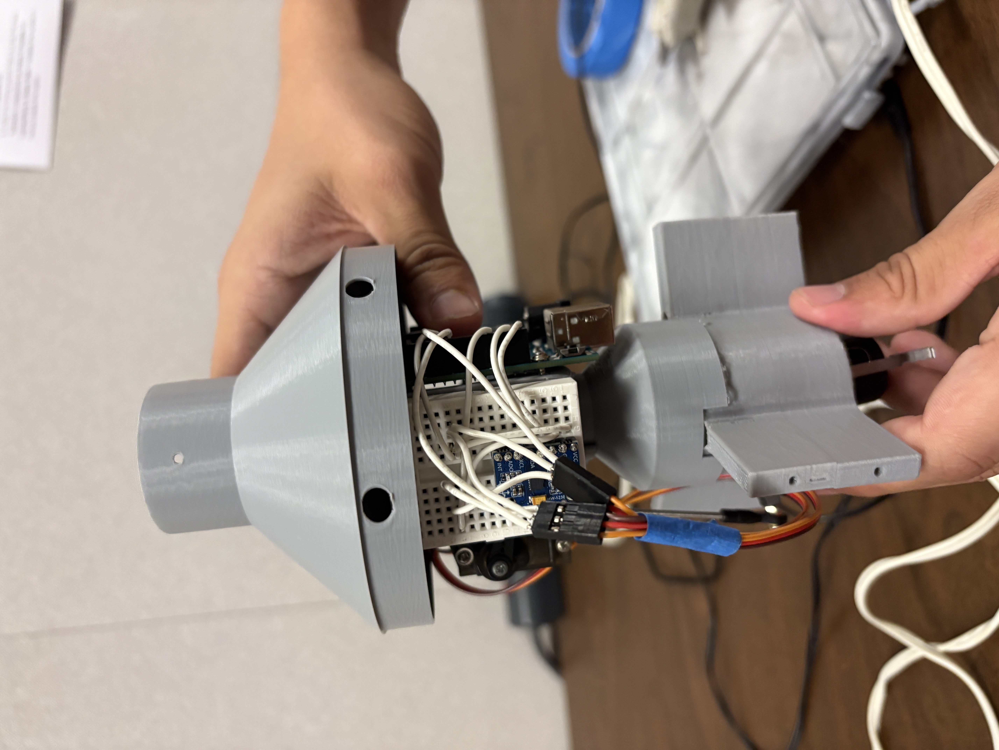
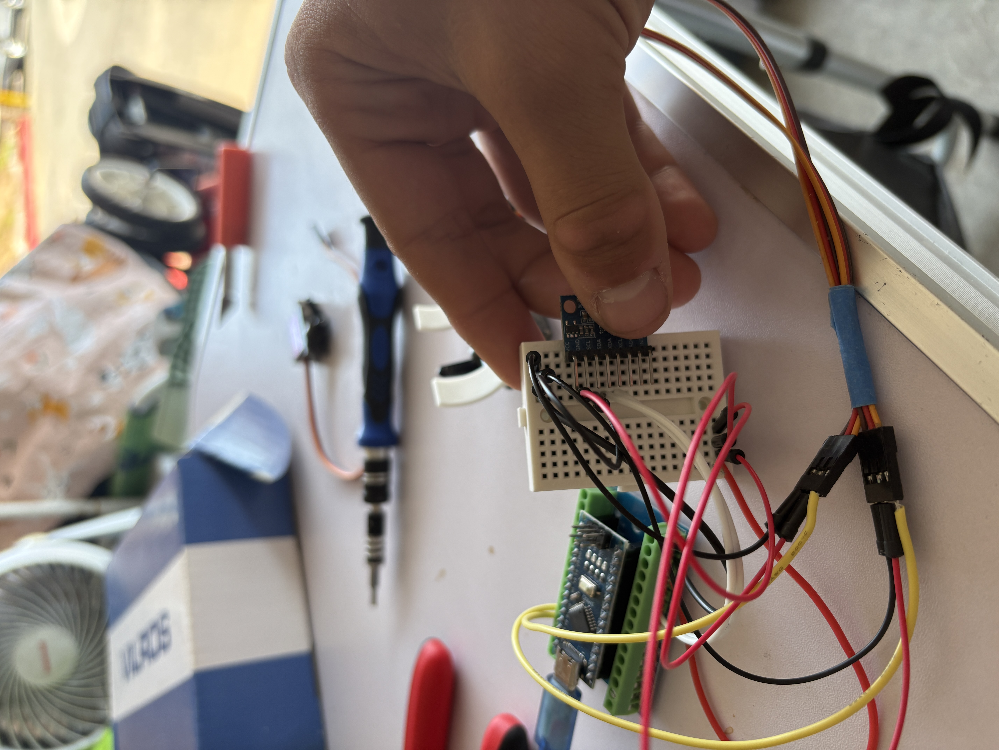
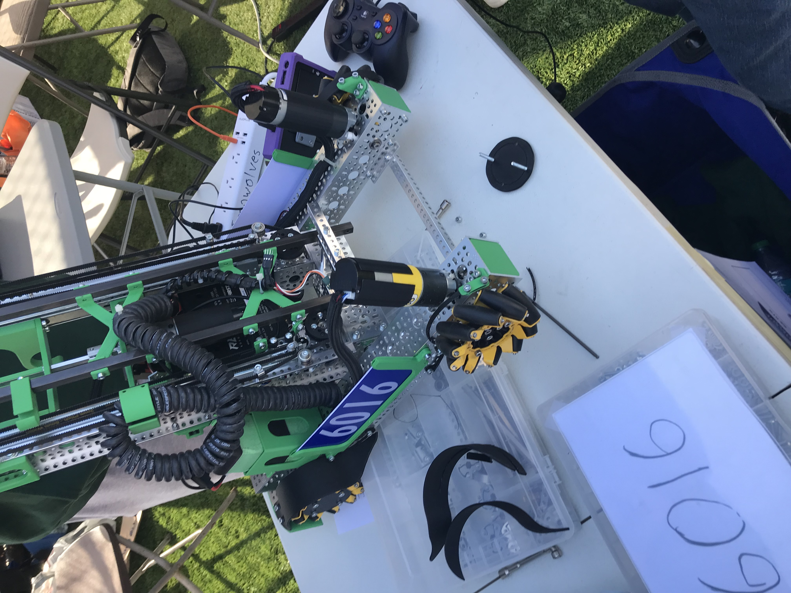

Electrical Engineering Student · UC San Diego
I'm a first-year Electrical Engineering student at UC San Diego with a particular interest in embedded systems and guidance, navigation & control (GNC), especially as applied to aerospace and rocketry. I got into engineering through a curiosity for how the things around me work, and I'm especially excited to dig into the electrical systems that make rockets work during my time at UCSD. Right now I'm looking to get involved in hands-on projects, internships, and research.
Project Electrical Lead — April 2026–Present
Designing the electrical and control systems for a rocket that actively corrects its flight path using thrust vectoring. Responsible for wiring and calibrating an MPU-6050 accelerometer/gyroscope, and implementing the correction logic in C++ using a PID (proportional-integral-derivative) control loop. Currently debugging the system by tuning engine mount centering and PID correction variables to align digital control output with real physical behavior. Collaborating with an aerospace engineer on integrating the electronics with CAD-designed components in OnShape.
Skills: C++, PID control theory, IMU sensor integration, circuit wiring, cross-disciplinary collaboration


Co-President / Electrical Lead — August 2023–June 2026
Served as electrical lead for a competitive FTC robotics team, working at the intersection of electrical design. Reviewed mechanical designs to confirm motor and servo usage stayed within competition power limits. Solved electrical pathing challenges under strict constraints — most notably a rule against routing wires beneath the robot frame — by working with the mechanical team to plan drilled passageways that let cables run freely without interference. Also addressed recurring connection failures at servo joints, where vibration during matches would loosen wiring; developed a reliable fix using tightly wrapped construction tape to secure connections against motion. Mentored newer members in CAD modeling and helped grow the program by starting two local FLL teams.
Skills: Electrical systems design, power budgeting, wire routing under physical constraints, CAD modeling, cross-team technical communication

Student Astronomer Intern / NASA JPL,Caltech, NITARP — August 2024–May 2025
Cross-referenced WISE R90 and Gaia DR3 AGN datasets to identify candidate objects showing proper motion consistent between both surveys. For roughly 350 candidate objects, used Caltech's IRSA Finder Chart tool to pull imaging by coordinate and visually evaluated each one, accepting or rejecting it as a true AGN based on shape, size, brightness, proximity to nearby objects, and other observational criteria. Presented the resulting classifications as a poster at the American Astronautical Society meeting and contributed to a published research paper.
Skills: Astronomical dataset cross-referencing, image-based classification, IRSA Finder Chart, technical communication, research methodology
Email: cazacudaniel260@gmail.com